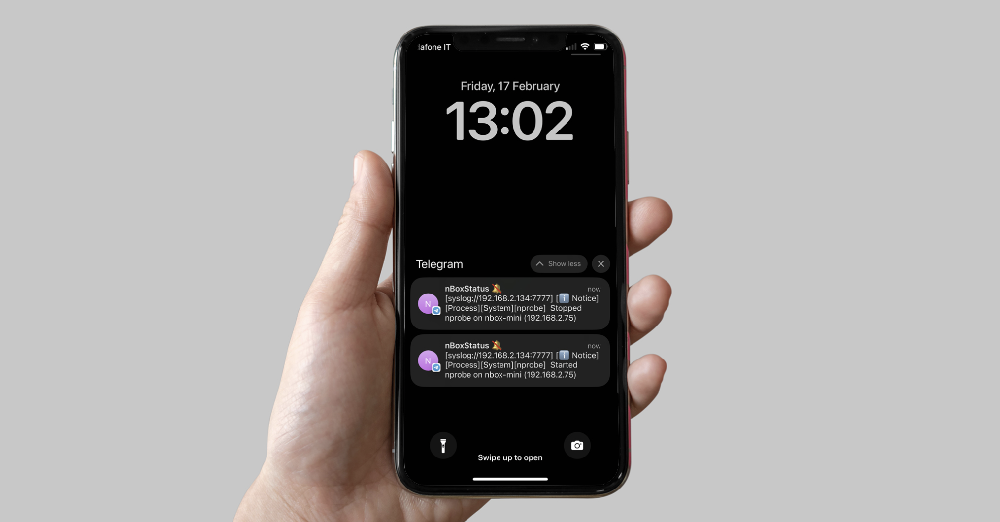
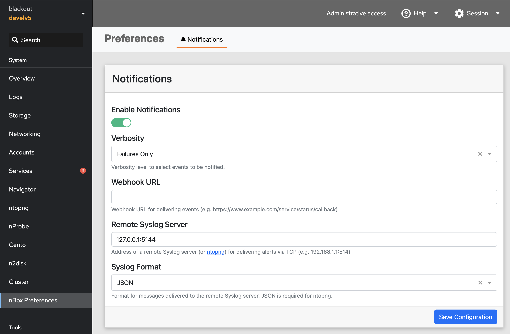

6. Уведомления
Пользовательский интерфейс nBox может уведомлять администратора о действиях, включая:
пользователи запускают и останавливают приложения и службы
сбои программного обеспечения
Это происходит путем регистрации событий, которые экспортируются на внешние серверы syslog. Эти журналы могут быть приняты ntopng и отправлены через любую конечную точку уведомлений. поддерживается ntopng, включая системы обмена сообщениями (например, Telegram, Slack и т. д.) электронная почта, веб-перехватчики и многие другие.

Для этого необходимо, чтобы формат syslog был настроен на JSON в уведомлениях. предпочтения. Адрес ntopng (включая порт, используемый для прослушивания для syslog журналов) также необходимо настроить.

Пожалуйста, проверьте документацию ntopng для получения дополнительной информации о приеме. события от nBox пользовательского интерфейса до syslog и настройку конечных точек уведомлений.